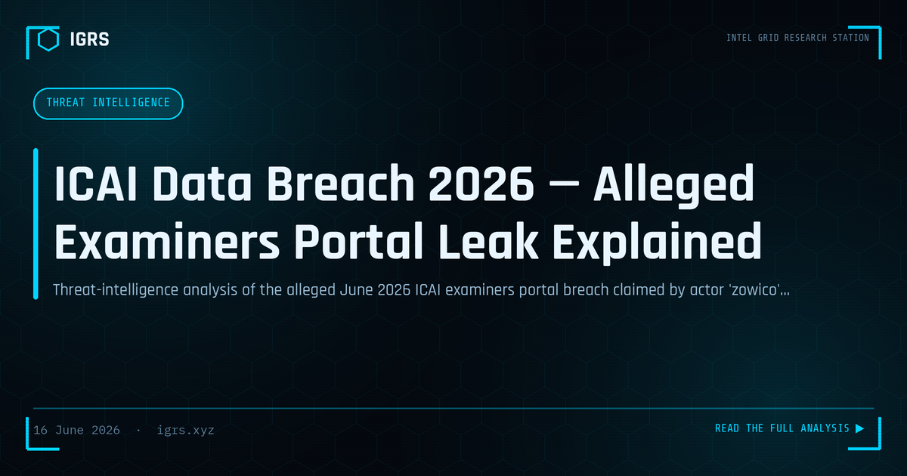

ICAI Data Breach 2026 — Alleged Examiners Portal Leak Explained
Status: UNVERIFIED. In mid-June 2026 a pseudonymous actor using the alias "zowico" posted on a cybercrime forum claiming unauthorised access to an examination system of the Institute of Chartered Accountants of India (ICAI). The claim spread quickly across Indian infosec channels. As of this writing the allegation has not been confirmed by ICAI or any independent source, and the figures circulating are inconsistent. This is a factual summary and risk analysis — not a confirmation — and IGRS does not link to, host, or facilitate access to any leaked material.
What is being claimed
Two overlapping versions of the claim are circulating, and they do not fully agree:
- Forum / threat-intel version: remote code execution and "superadmin" control of an ICAI examination subdomain, access to answer sheets of candidates from the May 2026 attempt, the ability to alter marks, plus examiner profiles and marking schemes — described as roughly 200,000+ records. The actor claims it is "not for sale" and was done "for fun."
- Breach-tracker version: an alleged member database of around 600,000 records (~120 MB) containing names, membership numbers, email addresses, mobile numbers, dates of birth, and residential/professional addresses.
The conflict between "200,000+ exam-system records" and "600,000 member records" is itself an analytical red flag — genuine, well-sourced disclosures rarely disagree on scope by 3x.
Source reliability & credibility assessment
Using a standard intelligence-grade frame:
- Source reliability — LOW. The actor is a newly created, pseudonymous forum account (registered the same month, very few posts, no established reputation). New low-reputation accounts frequently exaggerate or recycle claims.
- Information credibility — CANNOT BE CONFIRMED. No official ICAI statement, no independent verification, conflicting record counts, and a "for fun / not selling" narrative that is difficult to corroborate.
- Net assessment: treat as an alleged incident pending official confirmation. The plausibility is non-trivial (the targeted subdomain pattern is consistent with ICAI's real examination infrastructure), but plausibility is not proof.
Why it would matter — if true
- Examination integrity: claimed mark-modification and answer-sheet access would strike at the credibility of a national professional qualification — a far graver issue than ordinary PII loss.
- High-value PII: Chartered Accountants handle sensitive financial mandates; their identity, contact and registration data is prime material for targeted fraud.
- Downstream attacks: a verified member list enables phishing, vishing, professional impersonation, and Business Email Compromise against CAs, their firms and their clients.
Potential risks to monitor
- Targeted phishing and document-themed lures referencing ICAI, exams or membership
- Impersonation of CAs or examiners for fraud and social engineering
- Credential-stuffing using exposed emails against other services
- Spoofed "ICAI" communications asking for OTPs, fees or document uploads
What CAs, students and examiners should do
- Do not seek out, download, buy or share the alleged data. Accessing stolen data is itself a criminal offence in India (see legal section).
- Enable multi-factor authentication on ICAI, email and financial accounts.
- Treat unexpected emails, calls or "verification" requests as potential phishing — verify only via official icai.org channels.
- Never share OTPs; be sceptical of urgency around exams, results or fees.
- Watch bank and professional accounts for unusual activity.
- Rely only on official ICAI communication for confirmed scope and remediation.
What ICAI and large organisations should do
- Triage and validate the claim against logs for the named subdomain; assume-breach until ruled out.
- Report to CERT-In within 6 hours of becoming aware (mandatory under CERT-In Directions, 2022) and preserve forensic evidence with hash integrity.
- Force credential rotation and review privileged/superadmin access if any compromise indicator is confirmed.
- Prepare a factual public advisory; silence drives misinformation in trending incidents.
Legal context (India)
| Provision | Relevance |
|---|---|
| S.43 / 43A IT Act | Damage to computer systems; compensation for failure to protect sensitive personal data |
| S.66 IT Act | Computer-related offences (unauthorised access, alteration) |
| S.66C / 66D IT Act | Identity theft; cheating by personation using a computer resource |
| S.70 IT Act | Protected system provisions, where applicable to notified critical infrastructure |
| S.72A IT Act | Disclosure of information in breach of lawful contract |
| S.318 BNS 2023 | Cheating (alteration of marks / results for wrongful gain) |
| S.319 BNS 2023 | Cheating by personation |
| S.336 / S.340 BNS 2023 | Forgery; making/using a forged electronic record as genuine |
| DPDP Act 2023 | Data fiduciary obligations and personal-data-breach notification to the Data Protection Board |
| S.94 BNSS / S.63 BSA 2023 | Production of documents during investigation; electronic-evidence certificate for admissibility |
Note: exact charges depend on facts established by investigators. Accessing, possessing, or trading the alleged dataset can itself attract liability — readers should not attempt to obtain it.
Bottom line
This is, at present, an unverified claim by a low-reputation source, with internally inconsistent figures and no official confirmation. It deserves attention because the target and data types are plausible and the integrity implications are serious — but it should not be reported or shared as established fact. Follow official ICAI channels for confirmed information, stay alert to phishing in the meantime, and do not engage with any copy of the alleged data.